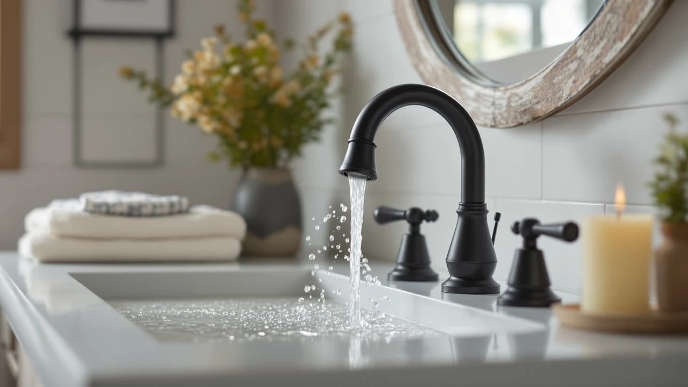

How to Clean Moen Bathroom Faucets: Complete Guide (2026)
Prices and picks verified as of October 2026. Independent, reader-supported reviews.


Things to Know Before You Buy
- Moen's brushed nickel and chrome finishes handle a vinegar soak fine, but oil-rubbed bronze and matte black finishes need soap and water only.
- A full cleaning takes about 45 minutes, and most of that is soak time for the aerator.
- Steel wool, bleach, and abrasive pads are the fastest way to void Moen's finish warranty.
- Hard water areas need this routine every four to six weeks; soft water areas can usually stretch to every two to three months.
Knowing how to clean Moen bathroom faucets the right way protects the finish and keeps hard water spots from building up around the spout and handles. A Moen faucet collects soap scum, toothpaste splatter, and mineral deposits every week, and the wrong cleaner can scratch a brushed nickel finish or dull chrome within months.
This guide covers the five steps that work for most Moen finishes, from brushed nickel to chrome, along with the specific supplies that lift mineral buildup without damaging the coating. You'll also find a few faucets worth considering if yours is too far gone to save, plus the mistakes that shorten a finish's life.
What You'll Need
- Supplies: white vinegar, mild dish soap, and baking soda
- Tools: a soft-bristle brush and microfiber cloths
Step 1: Shut off the water and clear the area
Before you clean Moen bathroom faucets, turn off the shutoff valves under the sink and run the faucet for a few seconds to release any pressure left in the lines. This step matters more than it looks: a loose aerator or handle can come free mid-clean, and you don't want water spraying across the counter while you're working.
Clear everything off the counter and out of the sink, including soap dispensers, toothbrush holders, and any trays sitting near the base of the faucet. Set down an old towel to catch drips and protect the countertop from the cleaning solutions you'll use in the next steps.
Take a close look at the faucet while the water is off. Note where mineral deposits have built up around the base, the handles, and the spout opening, since that's where you'll spend the most time later.
Step 2: Wipe down the faucet with soapy water
Mix a few drops of mild dish soap into a cup of warm water, then wipe down the entire Moen faucet body with a microfiber cloth dampened in the solution. Work from the top of the spout down to the base, covering the handles, the escutcheon plate, and any seams where grime collects.
Soap and water lift everyday residue like toothpaste splatter, hand soap film, and dust without touching the finish. This is the step most people skip when they clean Moen bathroom faucets in a hurry, and it's also the step that keeps a light cleaning from turning into a scrub session later.
Rinse the cloth often so you're not redistributing grime across the faucet, then switch to a dry section of the cloth to blot the surface before moving on.
Step 3: Soak the aerator and spout in vinegar
Unscrew the aerator from the tip of the spout by hand, or with pliers wrapped in a cloth to avoid scratching the finish. Submerge it in a bowl of equal parts white vinegar and water for 20 to 30 minutes to dissolve the mineral deposits built up inside the screen.
While the aerator soaks, wrap a vinegar-soaked paper towel around the spout opening and any visibly crusted areas. Vinegar is the most reliable way to clean Moen bathroom faucets with heavy limescale, since the acid breaks down calcium deposits that soap alone won't touch.
Check the finish before you start this step. Vinegar is safe on Moen's chrome, brushed nickel, and stainless finishes, but skip the soak on oil-rubbed bronze or matte black models and clean those with soap and water only.
Step 4: Scrub mineral deposits from handles and crevices
Once the vinegar has had time to work, scrub the handles, base ring, and any crevices with a soft-bristle brush, such as an old toothbrush. Focus on the area where the faucet meets the sink deck, since grime and hard water residue collect there faster than anywhere else on the fixture.
For spots that resist the vinegar soak, make a paste from baking soda and a little water and apply it directly to the deposit with the brush. The mild abrasive in baking soda lifts stubborn buildup without scratching the finish the way steel wool or scouring pads would.
Reattach the aerator once it's free of debris, and run water through it briefly to flush out any loosened particles before they settle back into the screen.
Step 5: Rinse, dry, and buff the finish
Turn the water supply back on and run the faucet for 15 to 20 seconds to rinse away any remaining soap, vinegar, or baking soda residue. Leftover residue can dull the finish over time, so this rinse step isn't optional even if the faucet already looks clean.
Dry the entire fixture immediately with a clean microfiber cloth, working into the same crevices you scrubbed in Step 4. Water left to air-dry is what causes fresh spots to form within minutes, undoing most of the work from this guide.
Finish with a light buff using a dry section of the cloth to restore shine. Once you've gone through this process, cleaning Moen bathroom faucets on a regular schedule takes a fraction of the time this first deep clean required.
Common Mistakes to Avoid
The biggest mistake people make when they clean Moen bathroom faucets is reaching for steel wool or an abrasive scouring pad on a stubborn water spot. Moen's brushed nickel and chrome finishes carry a thin protective coating, and anything coarser than a soft cloth or nylon brush leaves fine scratches that trap dirt and make the next cleaning harder.
Bleach and ammonia-based cleaners cause a second common problem. Both strip the coating on brushed and oil-rubbed finishes faster than plain soap and water, and Moen's own warranty language excludes damage caused by harsh chemical cleaners. Stick to dish soap, vinegar, and baking soda, and you avoid that risk entirely.
Letting water sit on the faucet after you rinse it is another frequent slip. Hard water left to air-dry leaves fresh spots within minutes, undoing the cleaning work you did a moment earlier, so dry the faucet with a microfiber cloth immediately after rinsing.
Finally, people often ignore the aerator and the base ring where the faucet meets the sink. Both spots trap grime that a quick wipe misses, which is why a faucet that looks clean up top can still have a chalky ring underneath after a few weeks.
Our Top Picks
If regular cleaning doesn't bring a tired faucet back, replacing it is often cheaper than an afternoon spent scrubbing corroded parts. These three faucets cover a genuine Moen upgrade, a budget-friendly brushed finish, and a premium gold option, and all three clean up with the same soap-and-vinegar routine described above.

Editor's Pick
Moen Eva Brushed Nickel Two-Handle
A genuine Moen two-handle faucet with the same brushed nickel finish covered in this guide, and it resists water spots better than many budget alternatives.
$157.99
Check Price on Amazon
Best Value
Bathroom Faucet 3 Hole Brushed
A brushed three-hole faucet that costs a fraction of the Moen above and holds up fine to the same soap-and-vinegar cleaning routine.
$43.30
Check Price on Amazon
Premium Choice
FORIOUS Gold Bathroom facuet 3
A polished gold finish that shows water spots fast, so it rewards the regular wipe-down schedule from Step 2 more than most other finishes.
$47.99
Check Price on AmazonFrequently Asked Questions
How often should I clean a Moen bathroom faucet?
Wipe it down weekly with a damp microfiber cloth and give it a deeper vinegar soak every one to two months, or more often in hard water areas where mineral deposits build up faster.
Can I use vinegar on all Moen faucet finishes?
Plain white vinegar is safe on chrome, brushed nickel, and stainless finishes, but avoid soaking Moen's oil-rubbed bronze or matte black finishes in it, since the acid can strip the protective coating and dull the color.
What should I avoid when cleaning a Moen bathroom faucet?
Skip abrasive scrub pads, steel wool, and bleach-based cleaners. They scratch the finish and can void Moen's limited lifetime warranty on the coating.
Why does my Moen faucet still look cloudy after cleaning?
Cloudy spots are usually hardened mineral film rather than dirt, and a quick wipe won't remove them. Give the fixture a full vinegar soak as described in Step 3, then rinse and dry it right away so new spots can't form.
Does Moen make a cleaner made specifically for its faucets?
Moen doesn't sell a dedicated faucet cleaner. The company's own care instructions recommend mild soap and water for routine cleaning and a diluted vinegar solution for mineral buildup, which is the same approach this guide follows.
Verdict
Cleaning Moen bathroom faucets doesn't require anything beyond dish soap, white vinegar, and a soft brush, and the five steps above handle everything from everyday grime to stubborn mineral buildup. The method works on nearly every Moen finish, with one exception: skip the vinegar soak on oil-rubbed bronze and matte black models and stick to soap and water instead.
Stay on a regular schedule and each cleaning session gets shorter. A faucet wiped down weekly rarely needs the full vinegar soak, while one that's gone months without attention needs the complete process described in Steps 3 and 4.
If a faucet has corroded past the point a cleaning can fix, especially around the valve or base, replacing it is usually the better move. The Moen Eva featured above uses the same brushed nickel finish covered in this guide and resists the water spots that make frequent cleaning necessary in the first place.